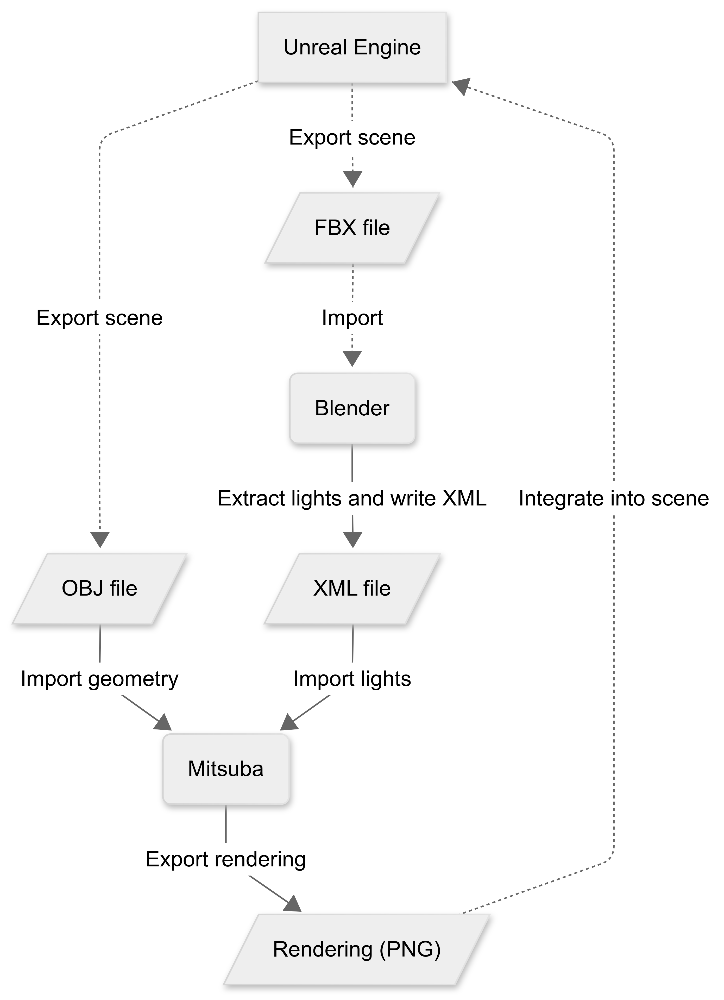

Mitsuba Rendering from Unreal Engine Export¶
This project allows you to:
Export light positions from a Blender scene (originally imported from Unreal Engine).
Render the 3D scene with Mitsuba 3 using those lights.
Save the results as PNG images and compressed HDF5 files.
Visualize all the rendered images easily.
Installation¶
This project was developed in Python 3.12, the compatibility with other versions cannot be guaranteed.
To install a requirements.txt is provided and the modules can be installed by
pip install -r requirements.txt
Project Structure¶
.
├── README.md
├── demo.ipynb <- demo noteboook
├── demo_scene <- contains demo scene objs and xmls
│ ├── scene10.obj
│ ├── scene10.xml
│ ├── scene11.obj
│ └── scene11.xml
├── images
│ └── workflow.png <- workflow image for README
├── requirements.txt <- pip requirements to install
├── src
│ ├── blender_export.py <- script to run in Blender to extract lights and write xml
│ └── mitsuba_render_h5.py <- renders a directory of scenes and saves as PNGs and HDF5
└── tests
└── test_mitsuba_render_h5.py
Use¶
The use of mitsuba_render_h5.py is relatively straightforward and also illustrated in demo.ipynb:
One can either run
from src.mitsuba_render_h5 import render_scene
in another Python file or run mitsuba_render_h5.py in the command line by running e.g.
python src/mitsuba_render_h5.py --scene_dir demo_scene --out_path demo_scene
with the current working directory as defaults for the arguments --scene_dir and --out_file.
This will save the rendered png files, as well as the combined HDF5 file in the out_path directory
Workflow¶
